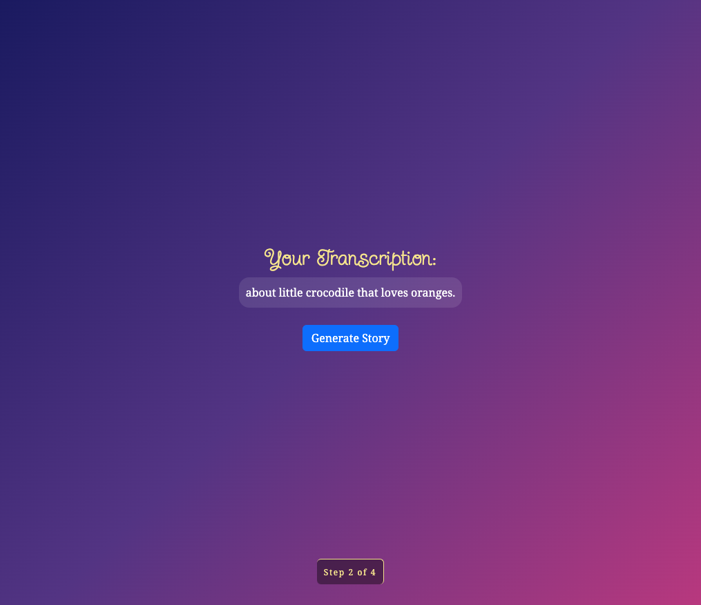
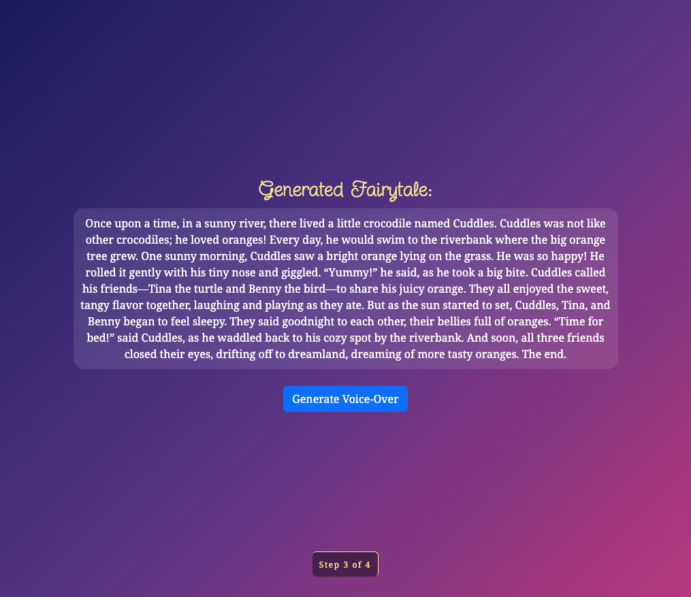
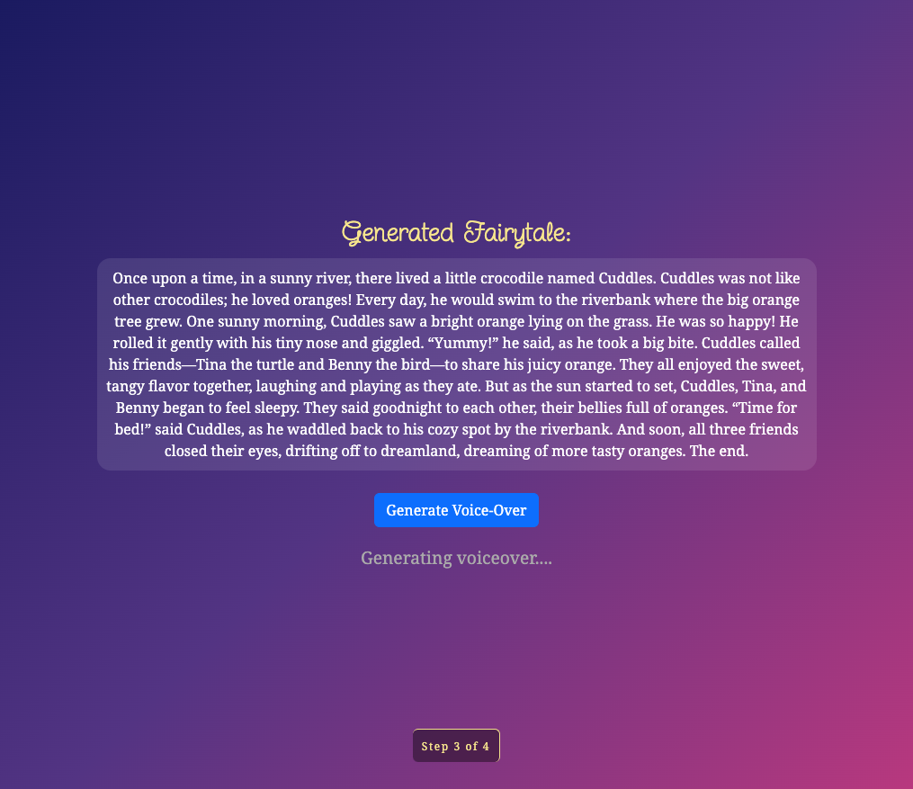
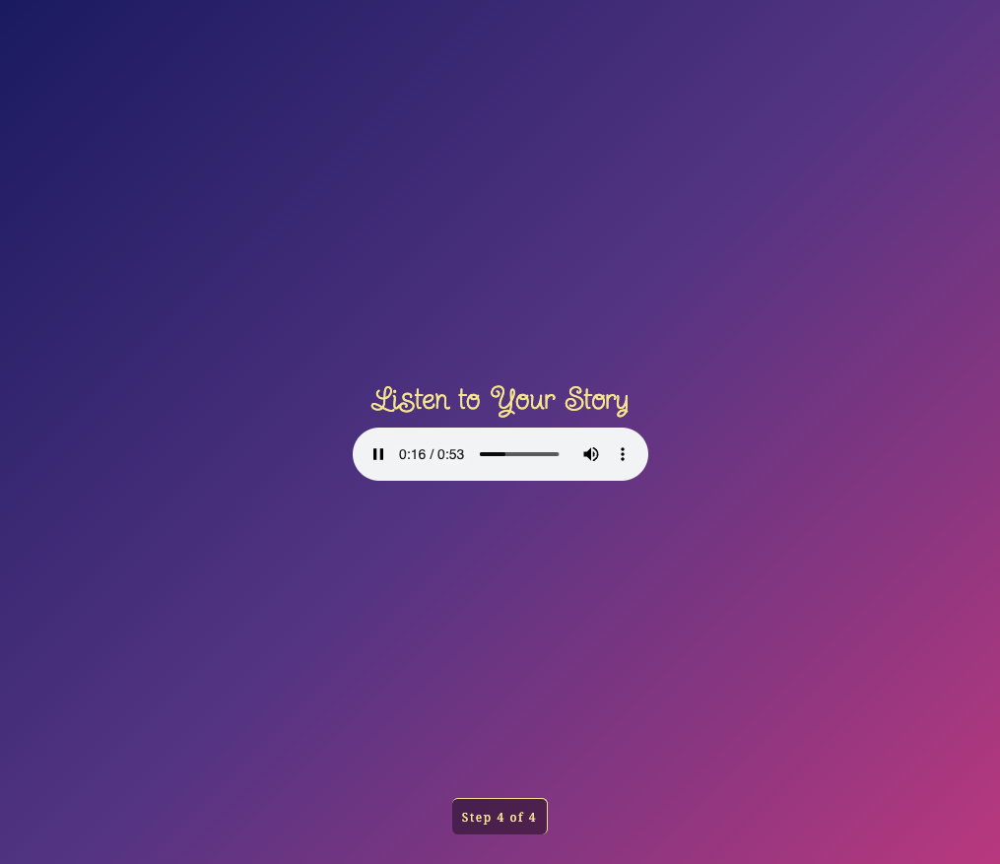
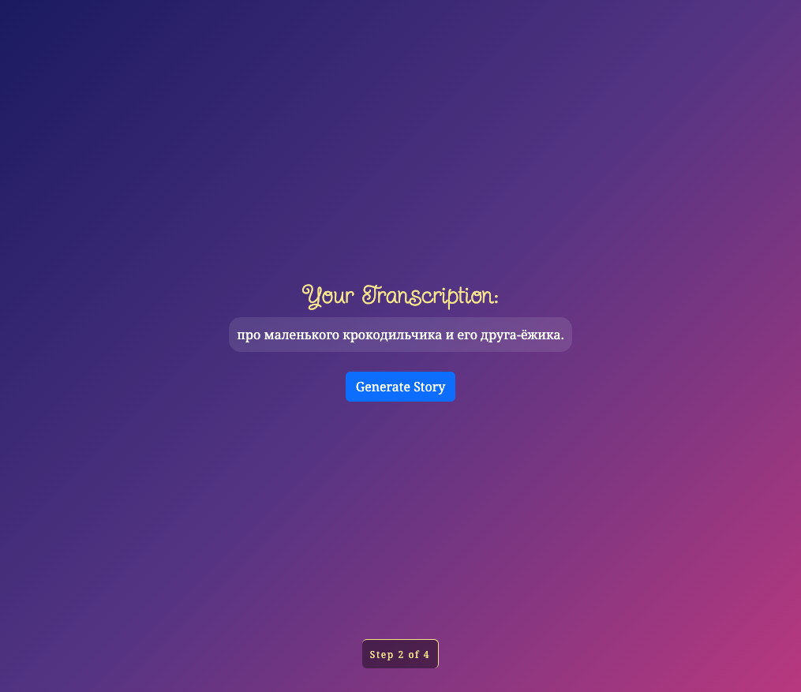
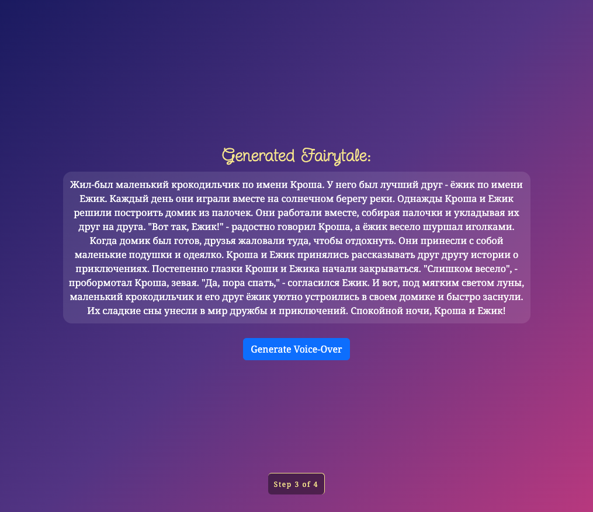

Generates a bedtime story for a 3-year-old using Whisperer and speech recognition - in your language.
This is a Flask (Python) based web application that generates a bedtime story for my 3 years old son, based on voice instructions about the content/title of the story.
It uses OpenAI whisperer and gpt-4o-mini model to transcribe the prompt and to generate the story, and performs a voice-over of the generated sory using ElevenLabs' text-to-speech API.
The story is generated in the language of the prompt, the voice over is performed by a calming female voice, and the story always ends with everyone getting tired and going to bed! :)





